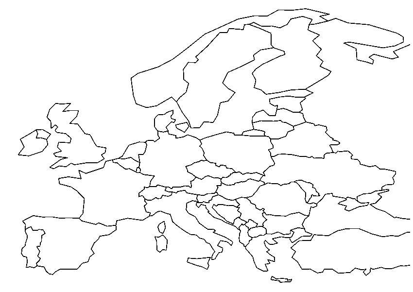

1.º trimestre · Geografía física y cartografía
De la orientación y los mapas a climas, paisajes y problemas ambientales.
Coordenadas y escala
Paralelos, meridianos, latitud, longitud y lectura de escalas.
- Explica la diferencia entre latitud y longitud.
- Calcula una distancia real con escala 1:50.000.
- Indica qué dato usarías para localizarte en un mapa.
Relieve y aguas
Formas del relieve, vertientes, ríos y grandes unidades territoriales.
- Distingue montaña, meseta, llanura y depresión.
- Relaciona tres ríos con su vertiente.
- Describe dos unidades del relieve peninsular.
España: mapa de trabajo
Localiza y rotula unidades de relieve, ríos, archipiélagos y principales referencias territoriales.

Grandes espacios geográficos
Trabaja Europa y el mundo mediante mapas mudos, no mediante memorización aislada.

Tiempo, clima y climogramas
Temperatura, precipitación, amplitud térmica y principales dominios climáticos.
- ¿Qué diferencia hay entre tiempo atmosférico y clima?
- ¿Qué dos variables aparecen en un climograma?
- Describe un clima mediterráneo en cuatro líneas.
Paisajes de Andalucía, España y Europa
Relaciona clima, vegetación, relieve y acción humana.
Un problema ambiental cercano
Analiza un problema de Andalucía: sequía, incendios, erosión, contaminación o presión urbana.
¿Sé leer y representar el espacio geográfico?
Prueba corta: escala + mapa + clima + paisaje. No busca repetir teoría, sino comprobar que el alumno sabe aplicar lo trabajado.
2.º trimestre · La Prehistoria
Fuentes, hominización, Paleolítico, Neolítico, Metales y patrimonio prehistórico.
¿Cómo sabemos lo que ocurrió?
La Prehistoria se reconstruye mediante restos materiales y trabajo arqueológico.
Hominización y eje del tiempo
Ordena grandes etapas y comprende que la evolución humana fue un proceso largo.
Vivir como cazadores-recolectores
Nomadismo, obtención de alimentos, herramientas, fuego, cooperación y arte.
La revolución neolítica
Agricultura, ganadería, sedentarismo, producción, desigualdad y nuevas técnicas.
Edad de los Metales y megalitismo
Metalurgia, especialización, comercio, jerarquización y monumentos megalíticos.
La Prehistoria cerca de nosotros
El alumno conecta el contenido con yacimientos, megalitismo y patrimonio andaluz.
Del Paleolítico a la Edad de los Metales
Ordenar, comparar, explicar causas y consecuencias e interpretar una fuente sencilla.
3.º trimestre · El Mundo Antiguo
Primeros Estados, Grecia, Roma, Mediterráneo, Hispania y legado clásico.
Mesopotamia y Egipto
Ríos, agricultura, ciudades, escritura, poder político, sociedad y religión.
Una sociedad desigual
Grupos privilegiados, campesinado, artesanos y personas esclavizadas.
Polis, Atenas y Esparta
Ciudad-estado, ciudadanía, democracia antigua y límites de la participación.
Alejandro y el mundo helenístico
Expansión territorial, contactos culturales y difusión de la cultura griega.
Monarquía, República e Imperio
Las tres grandes etapas políticas de Roma en una secuencia clara.
Patricios, plebeyos, mujeres y esclavos
La historia social también forma parte de la comprensión del mundo romano.
De los dioses clásicos al cristianismo
Mitología, culto público y expansión de una nueva religión en el Imperio.
Fenicios, griegos y cartagineses
Colonizaciones mediterráneas, comercio y contactos culturales.
La Bética y la romanización
Calzadas, ciudades, latín, derecho, economía y patrimonio romano en Andalucía.
Grecia y Roma: semejanzas y diferencias
Conservamos la buena actividad anterior, pero ahora llega después de haber construido conocimientos suficientes.
Banco de preguntas más amplio
La versión final tendría unas 45 preguntas y mostraría 10 aleatorias en cada intento. Aquí puedes probar una muestra de 5.
Comprendo las civilizaciones antiguas
Localización espacial y temporal, comparación, fuente histórica, sociedad y legado.